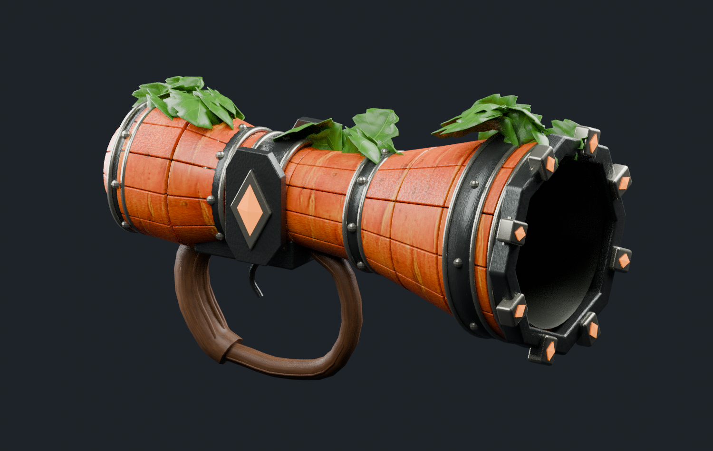

Loading the versioned model and texture…
Drag to orbit. Scroll or use the zoom buttons. With the model focused, arrow keys rotate and +/− zoom. Repeated recoil clicks restart one bounded presentation clip.
Inspect the current editable geometry, shared texture and recoil clip. The original concept remains the quality target. This is a browser model study, not Minecraft or a playable TaCZ weapon.

Loading the versioned model and texture…
Drag to orbit. Scroll or use the zoom buttons. With the model focused, arrow keys rotate and +/− zoom. Repeated recoil clicks restart one bounded presentation clip.